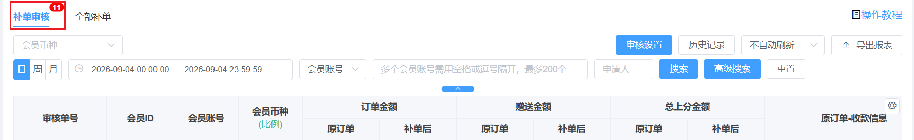
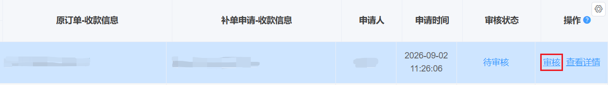
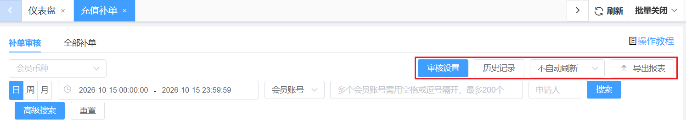
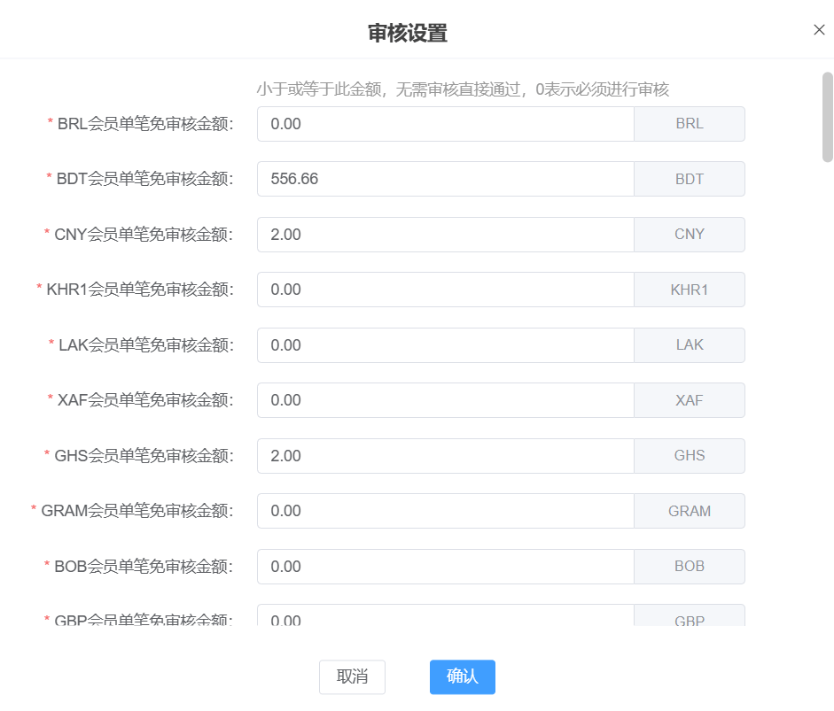
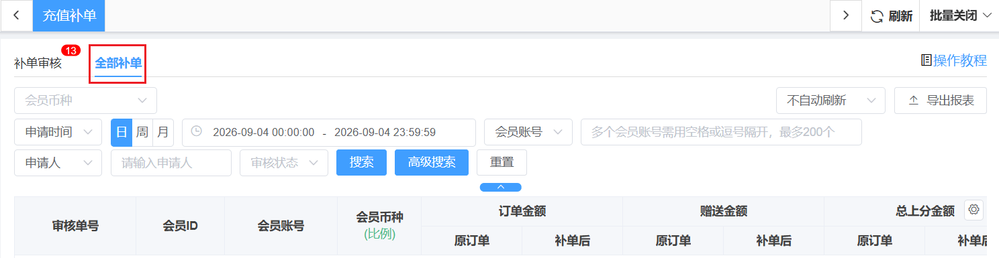

充值补单
一、补单审核

1、功能说明
可查看订单金额、赠送金额、总上分金额的补单前后信息、收款信息，以及订单的申请人、申请时间、审核状态，并进行详细操作。
2、字段说明
3、操作
点击【审核】，弹出审核详情，确认无误后点击通过，即可完成操作。

4、功能模块

(1) 审核设置：可进行个比种的详细审核金额设置，小于或等于此金额，无需审核直接通过，0表示必须进行审核。

(3) 历史纪录：直接通过“历史配置详情”查看设置的当前版本、历史版本的对应内容。存在多个设置项，点击不同设置项，即可分别查看各自的历史版本。
(4) 刷新设置：设置订单页自动刷新周期。
(5) 导出报表：针对会员的订单信息记录导出excel。
二、全部补单

1、功能说明
可配置该页面刷新频率，查看订单金额、赠送金额、总上分金额的补单前后信息、收款信息，以及订单的申请人、申请时间、审核状态。